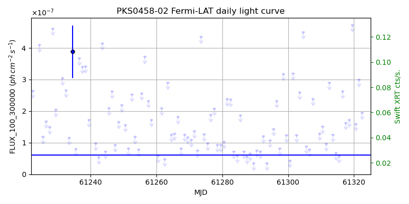
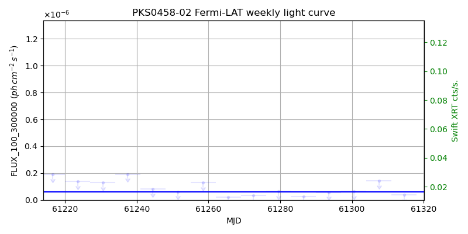
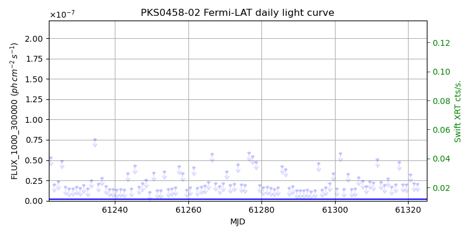
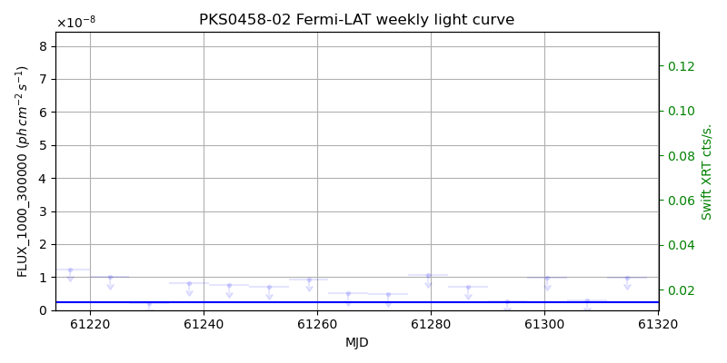

LAT Lightcurve site: https://fermi.gsfc.nasa.gov/ssc/data/access/lat/msl_lc/source/NRAO_190
Swift site: https://www.swift.psu.edu/monitoring/source.php?source=PKS0458-02
NED: Query
Time of last update of this page: UT: 2026-10-10 15:15 (MJD: 61323.636)
| Property | Value |
|---|---|
| R.A. | 4:42:38.64 |
| Dec. | -0:17:42.0 |
| z | 0.844 |
| 3FGL SpectrumType | PowerLaw |
| 3FGL PL Index | 2.41 |
| 3FGL Flux_100_300000 | 6.03e-08 1 / (s cm2) |
| 3FGL Flux_1000_300000 | 2.33e-09 1 / (s cm2) |
| 3FGL Flux >200 GeV | 1.30e-12 1 / (s cm2) |
| 3FGL Extrap. Crab >200 GeV | 0.01 |
| 3FGL Flux After EBL Absorption >200GeV | 4.11e-14 1 / (s cm2) |
| 3FGL EBL Crab Fraction >200GeV | 0.00 |

| MJD | dMJD | Flux | dFlux | Frac3FGL | FracCrab>200GeV | EBLFracCrab>200GeV |
|---|---|---|---|---|---|---|
| 61318.50 | 0.50 | 1.72e-07 | 0.00e+00 | 0.00 | 0.00 | 0.00 |
| 61319.50 | 0.50 | 4.73e-07 | 0.00e+00 | 0.00 | 0.00 | 0.00 |
| 61320.50 | 0.50 | 1.60e-07 | 0.00e+00 | 0.00 | 0.00 | 0.00 |
| 61321.50 | 0.50 | 3.00e-07 | 0.00e+00 | 0.00 | 0.00 | 0.00 |
| 61322.50 | 0.50 | 1.95e-07 | 0.00e+00 | 0.00 | 0.00 | 0.00 |

| MJD | dMJD | Flux | dFlux | Frac3FGL | FracCrab>200GeV | EBLFracCrab>200GeV |
|---|---|---|---|---|---|---|
| 61286.50 | 3.50 | 2.30e-08 | 0.00e+00 | 0.00 | 0.00 | 0.00 |
| 61293.50 | 3.50 | 5.65e-08 | 0.00e+00 | 0.00 | 0.00 | 0.00 |
| 61300.50 | 3.50 | 6.44e-08 | 0.00e+00 | 0.00 | 0.00 | 0.00 |
| 61307.50 | 3.50 | 1.42e-07 | 0.00e+00 | 0.00 | 0.00 | 0.00 |
| 61314.50 | 3.50 | 3.75e-08 | 0.00e+00 | 0.00 | 0.00 | 0.00 |

| MJD | dMJD | Flux | dFlux | Frac3FGL | FracCrab>200GeV | EBLFracCrab>200GeV |
|---|---|---|---|---|---|---|
| 61318.50 | 0.50 | 2.02e-08 | 0.00e+00 | 0.00 | 0.00 | 0.00 |
| 61319.50 | 0.50 | 2.01e-08 | 0.00e+00 | 0.00 | 0.00 | 0.00 |
| 61320.50 | 0.50 | 3.25e-08 | 0.00e+00 | 0.00 | 0.00 | 0.00 |
| 61321.50 | 0.50 | 2.13e-08 | 0.00e+00 | 0.00 | 0.00 | 0.00 |
| 61322.50 | 0.50 | 2.11e-08 | 0.00e+00 | 0.00 | 0.00 | 0.00 |

| MJD | dMJD | Flux | dFlux | Frac3FGL | FracCrab>200GeV | EBLFracCrab>200GeV |
|---|---|---|---|---|---|---|
| 61286.50 | 3.50 | 6.97e-09 | 0.00e+00 | 0.00 | 0.00 | 0.00 |
| 61293.50 | 3.50 | 2.74e-09 | 0.00e+00 | 0.00 | 0.00 | 0.00 |
| 61300.50 | 3.50 | 9.84e-09 | 0.00e+00 | 0.00 | 0.00 | 0.00 |
| 61307.50 | 3.50 | 2.89e-09 | 0.00e+00 | 0.00 | 0.00 | 0.00 |
| 61314.50 | 3.50 | 9.93e-09 | 0.00e+00 | 0.00 | 0.00 | 0.00 |
--------------------------------------------------------- Using user-supplied coords: 4:42:38.64 -0:17:42.0 2000 --------------------------------------------------------- FLWO UT night of: 2026-10-11 Local Sid. @ Midnight: 00:55 Sunset (-15.0) (local, UT): 19:04 02:04 Sunrise (-15.0) (local, UT): 05:18 12:18 Moonrise (local, UT): Moonset (local, UT): Moon phase: 0.01 --------------------------------------------------------- AzTime LSID UT Obj_el Obj_az Mn_el Mn_az Sep. --------------------------------------------------------- 19:04 19:58 02:04 -34.3 65.5 -16.1 264.2 126.6 19:34 20:29 02:34 -28.4 70.9 -22.3 267.8 126.8 20:04 20:59 03:04 -22.2 75.7 -28.5 271.5 127.1 20:34 21:29 03:34 -16.0 80.1 -34.7 275.4 127.3 21:04 21:59 04:04 -9.6 84.3 -40.8 279.7 127.6 21:34 22:29 04:34 -2.0 88.3 -46.8 284.6 127.9 22:04 22:59 05:04 3.4 92.2 -52.7 290.5 128.2 22:34 23:29 05:34 9.6 96.2 -58.4 297.7 128.5 23:04 23:59 06:04 15.9 100.4 -63.6 307.3 128.8 23:34 00:29 06:34 22.2 104.8 -68.1 320.3 129.1 00:04 00:59 07:04 28.3 109.7 -71.3 338.2 129.4 00:34 01:29 07:34 34.2 115.1 -72.6 0.4 129.7 01:04 01:59 08:04 39.8 121.3 -71.5 22.7 130.0 01:34 02:30 08:34 45.0 128.7 -68.3 40.8 130.4 02:04 03:00 09:04 49.7 137.4 -63.9 54.1 130.7 02:34 03:30 09:34 53.6 147.7 -58.7 63.8 131.0 03:04 04:00 10:04 56.5 159.9 -53.1 71.2 131.2 03:34 04:30 10:34 57.9 173.6 -47.3 77.2 131.5 04:04 05:00 11:04 57.9 187.7 -41.4 82.2 131.8 04:34 05:30 11:34 56.2 201.3 -35.3 86.6 132.1 05:04 06:00 12:04 53.3 213.3 -29.2 90.6 132.3 05:18 06:14 12:18 51.6 218.1 -26.5 92.4 132.4 --------------------------------------------------------- Dark hours >55 deg.: 2.02 srcstart (UT): 2026-10-11 09:47 srcend (UT): 2026-10-11 11:48